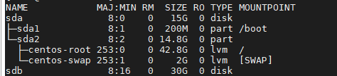
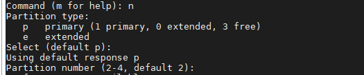

Increase hard disk
First, add the disk from vmware exsi or physically add disk. Then, create a new XFS partition.
lsblk
See disk path of added disk and note down

Make partition and set to linux lvm
fdisk /dev/sdb

Enter “n” for new disk partition and press enter for partitioning full disk in every line

Make kernel update for the changes to apply
partprobe /dev/sdb
Create physical volume of the added disk
pvcreate /dev/sdb1
Verify by listing physical volume
pvs or pvdisplay
Extend existing volume group “centos”
vgextend centos /dev/sdb1
Verify by listing volume groups
vgs or vgdisplay
List logical volumes
lvs
Extend existing logical volume “root”
lvextend -l +100%FREE /dev/centos/root
Verify by logical volumes
lvs or lvdisplay
grow xfs system
xfs_growfs /dev/centos/root
verify disk space of root
df -h
Suresh Saud sureshsaud17@gmail.com